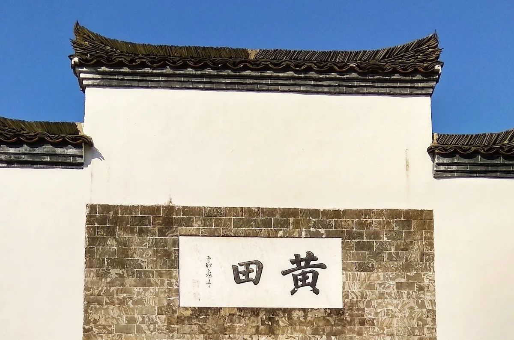
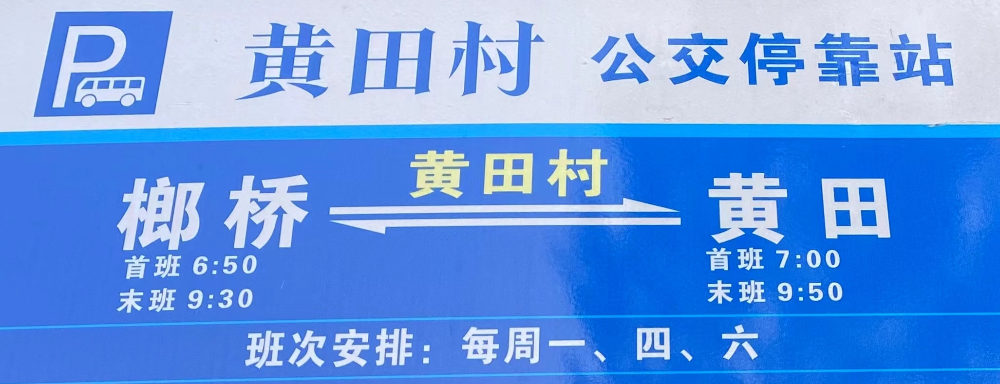

黄田古村生活指南
为便利新老「黄田新村民」在此时此地的生活，名下建立并维护此页面，欢迎提供信息，以使其更完整和及时。如有新的需求，也请提出，以作补充。
本页面最后更新日期：2023年11月15日 / 特别提示：以下手机号码均与微信同号，可直接拨打也可添加其微信。
日常需求联系
- 村中古民居超市胡老板：13865634738
- 电费缴纳事宜电工汪建：15156372241
- 送煤气汪师傅：13966238148
- 自然农场送米江叔：13865356352
- 收废品唐师傅：15056300969
- 水管维修成师傅：18365312328
- 电路维修吴师傅：13645632768
- 磨豆腐石师傅：18110857906
- 老街打印店老板娘：15956339698
- 宠缘宠物医院：15156340889 旌德/泾县均有
- 老街开锁换锁朱师傅：13655634340
- 家电维修平师傅：13645630388
- 榔桥大药房中药抓药冯涛：13865323544
- 老街超市对面药店：0563-5680868
快递收件
- 除以下快递之外的几乎所有快递都在榔桥客运站邮政快递点和中通，会统一派送到村里，存放在景区门卫室，请以收到短信为准；
- 若收到含取件码的短信，说明未被带到村里，需自行去取(邮快合作点或者中通[15212722786])
- 顺丰/京东：特殊情况外，京东（快递员：19502135646）和顺丰（快递员：18158990008）到件会在当天下午送到崇德别苑，会有电话或者短信联系。
- 德邦快递聂师傅：15056267261 （需自行去镇上德邦快递点取）
- 安能物流：13399637459 （需自行去镇上安能快递点取）
快递发件
- 可前往榔桥客运站邮政快递点、菜鸟驿站（含京东）、顺丰等直接办理；若要发德邦，则需与聂师傅提前联系；
- 非急件也可放在村中门卫室代发（需与到村派件的快递员提前联系），待其派件时帮助取走代发。
- 京东发件或者退件也可包装完好后，放在崇德别苑，（小程序在线下单）提前告知快递员（微信号xgfahjx）
- 发件数量多的，也可联系申通快递小哥阿亮，然后前往红绿灯路口涌溪火青茶处发送，享受协议价（微信：zhangliang198011）
- 旧衣回收发件：推荐白鲸鱼旧衣服回收、欧燕旧衣服回收（微信及支付宝小程序都可以搜到）
村中民宿及订餐咨询
- 河畔人家朱大姐：13865323393
- 蔡氏火青茶客栈蔡阿姨：18098546667
- 朱家大院朱老板：15155951770、18611103575
- 东新桥民宿：15205632652
- 惇裕堂民宿祝老板：13637226801、18792232796
- 其他待补充……
交通出行：
- 来往镇上公交车：

- 来往镇上私家车：洋师傅 15212722327 / 黄师傅 15956374298 / 胡师傅 18792207038 /师傅 13856322471 （村口15，进村20）
- 镇上到泾县公交车：55路
- 来往高铁站/泾县、旌德：朱师傅 13805629233
- 镇上去宣城公交车：
最后更新：2023年11月15日、返回个人介绍页